Colin's Books
In-depth coverage of the science, from the polar regions and oceans to the Anthropocene and the history of Antarctic exploration.
Polar
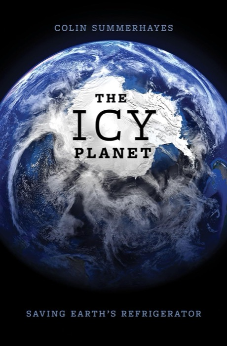
The Icy Planet
Saving Earth's refrigerator. Ice, snow and permafrost are mostly out of sight and out of mind, yet they reflect the Sun's energy and keep the planet cool. As warming melts them away, this book charts a path forward beyond Net Zero.
Read moreShow less
This book describes the ice-covered parts of our planet, explains how we came to know about them and who explored and mapped them, and in some cases suffered the consequences, their ships being crushed by ice. It takes us on journeys to out-of-the-way icy places, describing the scenery and the wildlife of East Antarctica, West Antarctica, the Antarctic Peninsula, the Arctic, and the Third Pole (the snowy and glaciated mountains). The author provides snapshots of his own experiences in these ice-bound terrains, as a scientist, a historian, a tourist and an Antarctic shipboard lecturer. He draws attention to the dramatic effects of global warming on ice and snow, the progressive loss of ice from Greenland and Antarctica, the rapid retreat of mountain glaciers and the opening up of the Arctic Ocean to commercial traffic as the summer sea ice cover disappears. He ends with informed speculation about future ice melt and its most likely effect on the sea levels around our coasts.
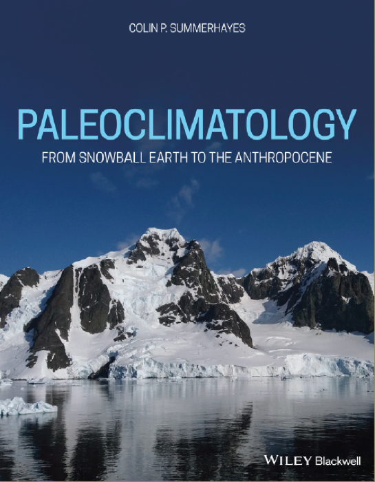
Paleoclimatology
From Snowball Earth to the Anthropocene. An expanded, more lavishly illustrated successor to Earth's Climate Evolution, explaining how the climate system works, how it has changed through geological time, and what past changes tell us about the future.
Read moreShow less
Life on our planet depends upon having a climate that changes within narrow limits. Over the past billion years Earth's average temperature has stayed close to 14–15°C, oscillating between warm greenhouse states and cold icehouse states. Paleoclimatology is the science of understanding and explaining those variations, those limits, and the forces that control them. With that understanding we will be able to foresee future change accurately as our population grows. Our impact on the planet is now equal to a geological force, to the point that many geologists see us as living in a new geological era – the Anthropocene. This book describes Earth's passage through the greenhouse and icehouse worlds of the past 800 million years, including the glaciations of Snowball Earth in a world that was then free of land plants. It describes the operation of the Earth's thermostat, which keeps the planet fit for life, and its control by interactions between greenhouse gases, land plants, chemical weathering, continental motions, volcanic activity, orbital change and solar variability. It explains how we arrived at our current understanding of the climate system, reviewing the contributions of scientists since the mid-1700s and showing how their ideas evolved as science progressed. And it includes reflections based on the author's involvement in palaeoclimatic research. The book will be an invaluable course reference for undergraduate and postgraduate students in geology, climatology, oceanography and the history of science.
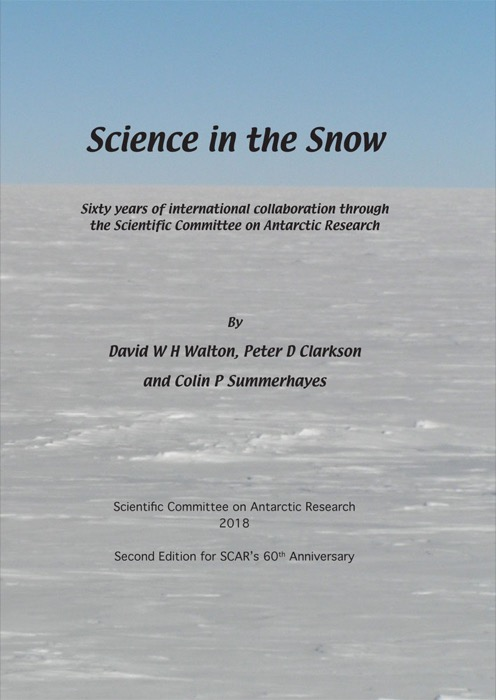
Science in the Snow
With David W. H. Walton and Peter D. Clarkson
Sixty years of international collaboration in Antarctic science, coordinated by SCAR since the International Geophysical Year of 1957-58. Written to introduce the general reader to why Antarctica is such a critical part of the Earth System.
Read moreShow less
This book describes sixty years of international collaboration through the Scientific Committee on Antarctic Research (SCAR), a subsidiary body of the International Council for Science. SCAR is also the primary advisor to the Antarctic Treaty. SCAR is thus the premier scientific body coordinating Antarctic and Southern Ocean research as well as providing scientific advice to governments. This book clearly portrays the voluntary contributions that provide a strong and extraordinary social good – making plain both the scientific evidence and its implications, for example in terms of climate change and ice loss. SCAR has helped to deliver fundamental science that is breath-taking in its scope and its beauty.
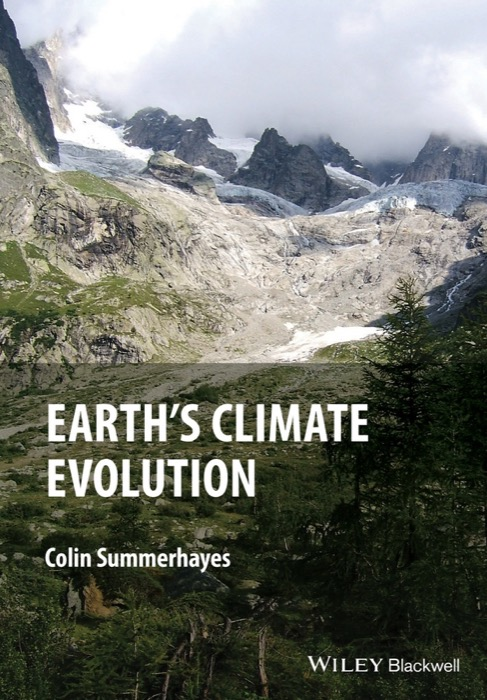
Earth's Climate Evolution
The first edition of what would later become Paleoclimatology — a geological perspective on how Earth's climate system works and how it has evolved over time.
Read moreShow less
The climate is always changing, they say, but what they ignore in that mindless drivel is any consideration of what caused past changes and why they may have differed wildly from what we are now experiencing. This book originated in discussions within the Geological Society of London that led to the Society's first statement on climate change, in 2010. It is often said that those who forget history are condemned to repeat it. This book sets out the multiple studies that began in the late 1700s, revealing how much of our understanding of Earth's climate history and the role of atmospheric CO2 has been known for well over a century. The basic understanding that emerged by the end of the 19th century has been improved upon and verified in remarkable detail since then, especially through determining environmental conditions (including temperature and CO2) at various times and places in the past from ice and sediment cores. More recently we have been able to numerically simulate Earth's climate through computer modelling of the various interactions involving the atmosphere, ocean, snow and ice and the living world, including the cycles of carbon, nitrogen, phosphorus and sulphur. Since the mid 1980s, modern science has treated the Earth as a system, comprising multiple subsystems that all interact with one another. Those interactions form the basis for the models, which provide the only way we have of looking into the future to see what the effects might be of changes that humans make. Our burgeoning knowledge of the operations of the Earth System is huge, giving us confidence in forecasting the way forward, giving us time to act to reverse changes that seem unwise for human civilization.
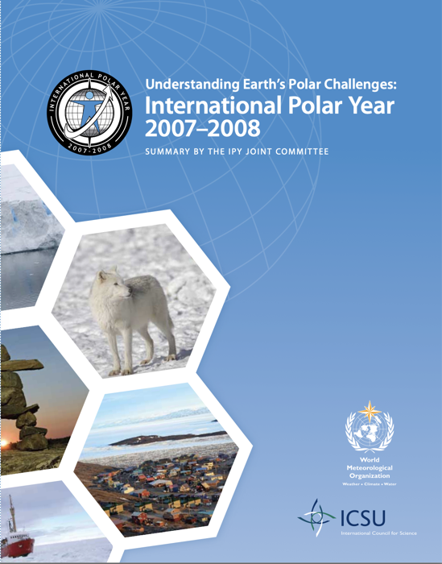
International Polar Year 2007-2008
Edited with Igor Krupnik, Ian Allison, Robin Bell, Paul Cutler, David Hik, Jerónimo López-Martínez, Volker Rachold and Eduard Sarukhanian
A summary report on the largest polar research effort ever undertaken — 50,000 people from over 60 nations on 170 projects — compiled by 300 authors and reviewers for the IPY's co-sponsors, ICSU and the WMO.
Read moreShow less
The International Polar Year (IPY) 2007–2008 followed in the footsteps of its predecessor, the International Geophysical Year 1957–1958. An estimated 50,000 researchers, local observers, educators, students, and support personnel from more than 60 nations were involved in the 228 international IPY projects and related national efforts. The IPY generated intensive research and observations at both poles over a two-year period, with many activities continuing beyond. It involved a large range of disciplines, from geophysics to ecology, human health, social sciences, and the humanities. All projects included partners from several nations and/or from indigenous communities and polar residents' organizations. The IPY included education, outreach, and communication of science results to the public, and training the next generation of polar researchers.
The IPY science programme had an inter-disciplinary framework with six overarching themes: Status, Change, Global Linkages, New Frontiers, Vantage Points and Human Dimension. This report covers the development of IPY from 2001 till 2010, engaging almost 300 authors and reviewers from more than 30 nations, and provides a blueprint for the next IPY. The IPY strengthened polar research and advanced understanding of polar processes and their global linkages, establishing extensive data against which future change can be assessed.
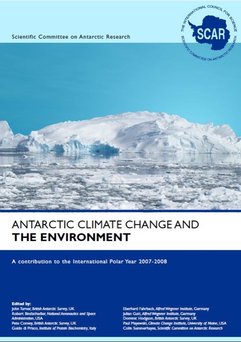
Antarctic Climate Change and the Environment
Edited with John Turner, Robert Bindschadler, Pete Convey, Guido di Prisco, Eberhard Fahrbach, Julian Gutt, Dominic Hodgson and Paul Mayewski
A survey of the great white continent, from its environment and life within the global climate system, through the technologies used to monitor it, to its history and what the next 100 years may bring.
Read moreShow less
This book is a comprehensive, up-to-date account of how the physical and biological environment of Antarctica and the Southern Ocean has changed from Deep Time until today, and considers how the Antarctic environment may change over the next century in a world where greenhouse gas concentrations are increasing. The Antarctic is a highly coupled system with non-linear interactions between atmosphere, ocean, ice and biota, along with complex links to the rest of the Earth system. The authors took a cross-disciplinary approach to reflecting the importance of the continent in global issues, such as sea level rise, the separation of natural climate variability from anthropogenic influences, food stocks, biodiversity and carbon uptake by the ocean. 100 experts in Antarctic science contributed, and 200 scientists reviewed the manuscript. It should be of value to all scientists with an interest in the Antarctic continent and the Southern Ocean, policy makers, and those concerned with the deployment of observing systems and the development of climate models.
Oceans
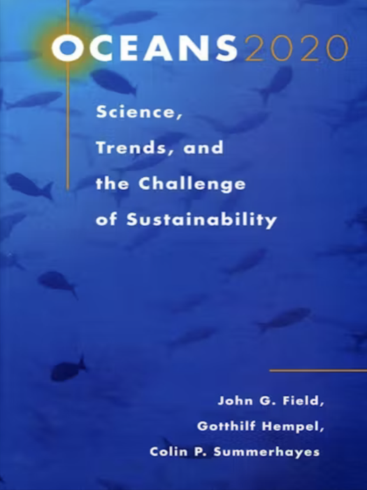
Oceans 2020
With John G. Field and Gotthilf Hempel
Science, Trends, and the Challenge of Sustainability. A comprehensive assessment of the science and societal issues likely to shape marine science and ocean management in the first 20 years of the 21st century.
Read moreShow less
Oceans 2020 presents a comprehensive assessment of the most important science and societal issues that were thought likely to arise in marine science and ocean management by 2020. The book brought together the world's leading ocean scientists and researchers to analyse the state of marine science and technology, identify key scientific issues for sustainable development, and evaluate the capability of scientists, governments, and private-sector stakeholders to respond to those issues. Many of the recommendations made in this book provide a blueprint for the future that is still highly relevant to the national and international implementers of the new High Seas Treaty, which came into force in January 2026.
In many ways the scientists contributing to the book anticipated the goals agreed by nations in 2022 under the UN's Kunming-Montreal Global Biodiversity Framework, and the agreement adopted by UN Member States in June 2023 on the Conservation and Sustainable Use of Marine Biological Diversity of Areas Beyond National Jurisdiction, commonly known as the High Seas Treaty, which is designed by 2030 to conserve 30% of the ocean from damage to biodiversity. The Treaty will blow wind into the sails of efforts to restore the health of our ailing ocean, and provide the legal framework to create area-based management tools for the High Seas, including marine protected areas. Networks of such areas in international waters are necessary to achieving the Treaty's goals.
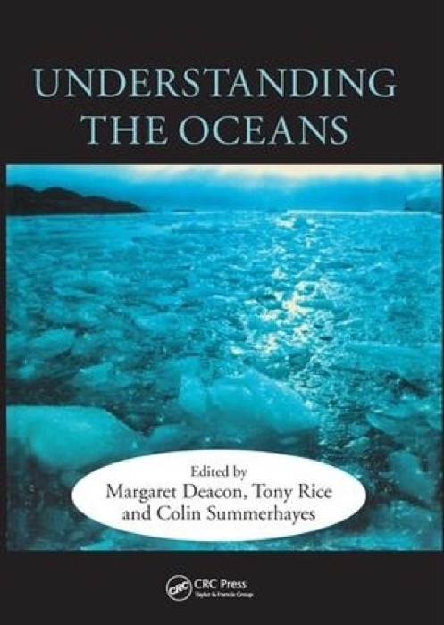
Understanding the Oceans
Edited with Margaret Deacon and Tony Rice
A Century of Ocean Exploration. An internationally distinguished group of authors surveys the advances in marine science made since the voyages of HMS Challenger a century earlier, written with the non-specialist reader in mind.
Read moreShow less
This book was designed to explore and highlight the discoveries of the century of ocean exploration that began with the remarkable round-the-world oceanographic voyage of HMS Challenger in 1872–76. It began with a conference at which the papers in this volume were presented. Nowadays we are privileged to see images of the Earth and ocean from space, which convince us that our lives depend on the functioning of a global system involving a complex interplay between the physics, chemistry, biology and geology of the solid Earth, the ocean, the atmosphere and the biosphere. Understanding this has led to the establishment of large new institutions of science such as the Southampton (now National) Oceanography Centre in the UK, where scientists from different disciplines can work together in a holistic way to solve the complex problems of the modern world, such as global warming and its impacts. We need to take a global approach (as did the Challenger Expedition) to understand the workings of the life support systems of our planet before they are damaged beyond repair.
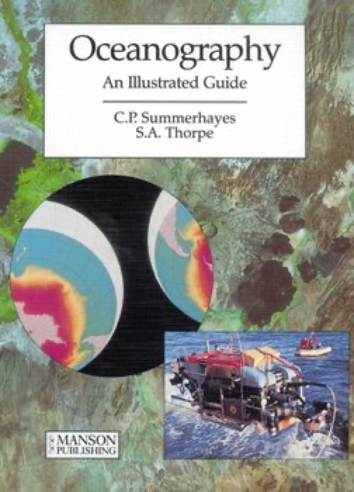
Oceanography: An Illustrated Guide
With S. A. Thorpe
A richly illustrated introduction to oceanography from 40 contributors worldwide, spanning history, instrumentation, physical geography, meteorology, biology and chemistry of the sea — suitable for coursework and general readers alike.
Read moreShow less
This book was designed to fill a gap in the literature regarding what oceanography is all about, and what oceanographers do. It contains a wealth of information on a broad range of topics, and should be of interest to anyone, adult or student, with ocean questions. One of the funny things about ocean studies is that all that water gets in the way, so rather like space scientists we have to use technologies to investigate, sample, measure and photograph the remote ocean depths. It's often said that we know less about the shape of the seabed than about the surface of the moon, but we are getting better at it. The other thing about the ocean is that it is virtually global, covering about 70% of the Earth's surface; we really are a water planet. If you want to understand how the Earth operates as an environmental system, you can't avoid studying the oceans. But the oceans also have real relevance, to fisheries, coastal protection, international trade, tidal or wave power, and the proper management and regulation of the use of oceans and seas. The ocean moves heat around the world slowly, so forms the flywheel of the global climate system. Knowing how it works is integral to understanding climate change.
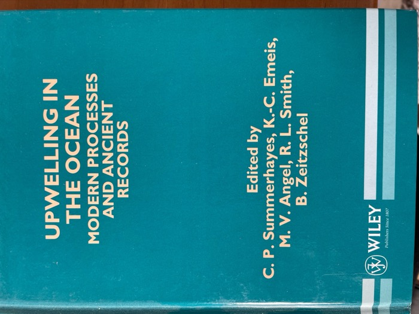
Upwelling in the Ocean
Edited with K.-C. Emeis, M. V. Angel, R. L. Smith and B. Zeitzschel
Modern Processes and Ancient Records. Upwelling drives 80-90% of new ocean productivity and underpins major fishing grounds; this volume examines how upwelling systems work and how they have shaped global nutrient and carbon cycles.
Read moreShow less
This book is a report of a Dahlem Workshop on this topic that took place in Berlin in 1994. Upwelling replaces surface waters that biological activity has depleted in nutrients with cool subsurface water rich in nutrients that stimulates new production. Along coasts, it gives us the world's major fisheries. But it can occur in the open ocean too. The process plays a key role in controlling the global distribution of nutrients. Because the sediments beneath it act as sinks for carbon, silica and phosphorus, their existence helps to control the global cycles of these nutrients through time. The phenomenon demands interdisciplinary study to enhance our understanding of how upwelling systems work. That is the first step to modelling them and thus forecasting their response to, or influence on, global change. El Niño events damp Peruvian upwelling, causing considerable harm to local communities. Forecasting models will aid communities in anticipating positive or negative effects and designing policies to deal with such changes. Ancient upwelling currents in past millions of years are likely behind the localised accumulation of the organic matter that cooked in the Earth to generate oil and gas. Hindcasting the possible locations of such activities can aid exploration.
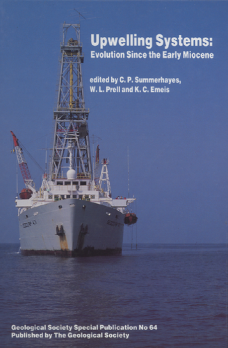
Upwelling Systems: Evolution Since the Early Miocene
Edited with W. L. Prell and K. C. Emeis
Traces the sedimentary record of coastal upwelling currents since the establishment of modern ocean circulation in the Miocene, drawing on results from deep ocean drilling.
Read moreShow less
This Geological Society of London Special Publication 64 contains data on recent advances in the understanding and application of the evolution of upwelling systems since early Miocene times. Its object was to identify how upwelling environments can be identified in the geological record, and how these sensitive recorders of environmental change can be tracked back through time. The focus was on the sediments being drilled by the Deep Sea Drilling Project, especially on continental margins, and on making the results of these studies available to the wider community. The patterns and characters of fossil upwelling systems provide us with new insights into the forcing and feedback mechanisms that connect climate change with ocean circulation and marine productivity.
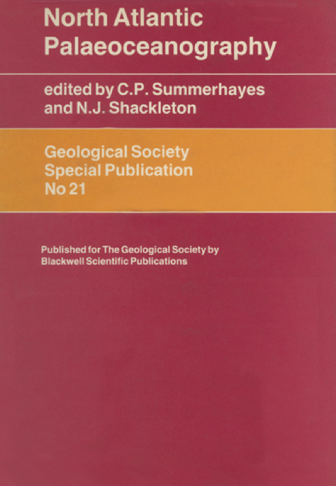
North Atlantic Palaeoceanography
Edited with N. J. Shackleton
A review of results from the Deep Sea Drilling Program, covering the development of North Atlantic oceanography through ocean circulation, sedimentation, and Cenozoic and Mesozoic palaeoceanography.
Read moreShow less
This Geological Society of London Special Publication 21 explores the role of deep ocean drilling in the new science of palaeoceanography, and was based on papers presented at a Geological Society conference in November 1984. Several of the contributions refer to the observation of deep-ocean organic-rich 'black shales', the potential sources for petroleum and thus relevant for assessing deep-water hydrocarbon potential around the North Atlantic.
Anthropocene
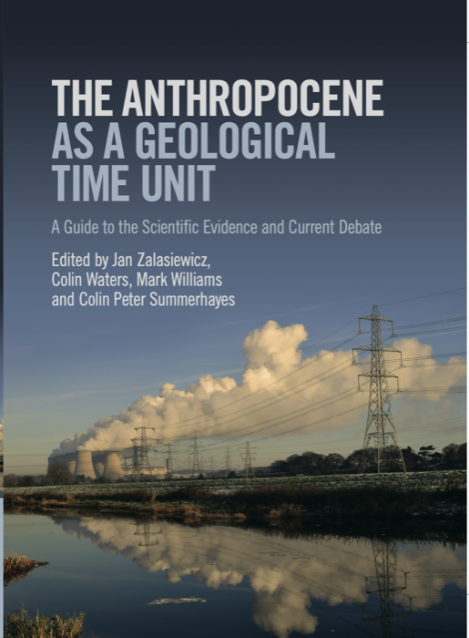
The Anthropocene as a Geological Time Unit
Edited with Jan Zalasiewicz, Colin Waters and Mark Williams
Presents the evidence for defining the Anthropocene as a geological epoch — from pollution signals to landscape and biological change — set against the scale of natural planetary processes and past transitions in Earth history.
Read moreShow less
Many environmental scientists and geologists consider that all the changes made to the planet by human activities, due to the enormous growth in our population since 1950, have pushed Earth out of the former stable environment of Holocene time (the past almost 12,000 years) into a new geological epoch named the Anthropocene to reflect these underlying human forces. The immediate post-war era starting around 1950 saw huge and dramatic increases in planetary stresses, collectively described as The Great Acceleration. These changes continue, with global warming being driven by growing emissions of greenhouse gases from the burning of fossil fuels. This book from a range of geologists describes the history and development of the Anthropocene as a stratigraphic concept; its stratigraphic and biological signatures; the physical stratigraphic record of our technological changes (the geology of plastic remains, for instance); the chemical stratigraphic signature of the Anthropocene, for instance in atom bomb products worldwide; and the nature of the basal boundary of the Anthropocene, as well as speculation about the future of the Anthropocene. Despite being a science book, it is broadly amenable to the educated reader.
Antarctic History
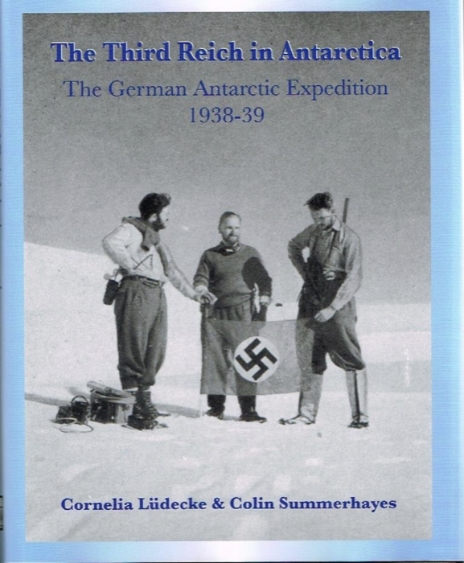
The Third Reich in Antarctica
With Cornelia Lüdecke
The German Antarctic Expedition, 1938-39. The story of the Schwabenland's aerial survey of Dronning Maud Land, its discoveries of a vast mountain range and unsuspected freshwater lakes, and Germany's thwarted attempt to claim the territory.
Read moreShow less
The Third German Antarctic Expedition (1938–39) originated in the aspirations of German scientists to continue exploring Antarctica, and the Nazi Party's drive for self-sufficiency. In 1936/37 Germany joined whaling nations in the South Atlantic to obtain whale oil without using foreign currency reserves needed for rearmament. Thinking that it needed a local whaling base, Germany decided to test the feasibility of creating one on the coast of Dronning Maud Land. This reconnaissance expedition included a ship (Schwabenland) and two Dornier-Wal seaplanes for aerial survey. The expedition was led by Alfred Ritscher, a captain in the merchant marine. They arrived off the coast on 19 January 1939, placed German flags on the coastal ice, and named the area Neu-Schwabenland. The two planes flew over hundreds of thousands of square kilometres and took more than 16,000 aerial photographs, discovering an 800 km long mountain range and previously unsuspected freshwater lakes near the coast. It was a short visit; they were back in Germany on 11 April 1939. The authors had access to private files enabling them to lift a veil on the expedition, the official files of which were largely destroyed during World War II. From the files and individuals' accounts the authors were able to dispel many of the myths about the expedition and its aftermath.
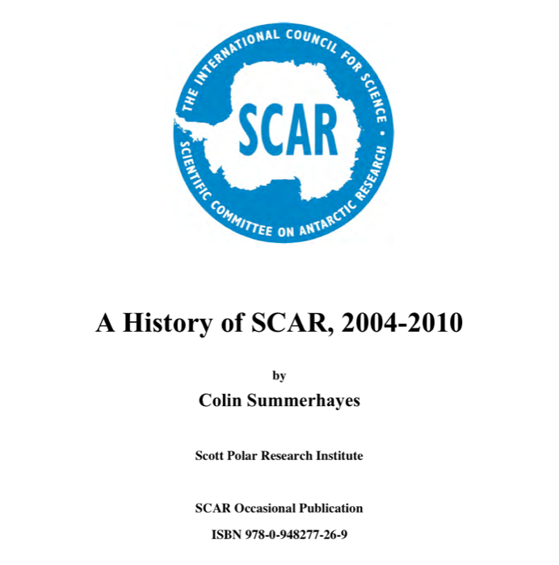
A History of SCAR, 2004–2010
An account of SCAR's activities from 2004 to 2010, written by its first Executive Director — the full-length version of a chapter that had to be condensed for the Society's 50th-anniversary book.
Read moreShow less
By 2004 it was plain that continued global warming was having its most significant effects on the polar regions, and plans were in train for the International Polar Year 2007–2008 — the largest internationally coordinated research programme in fifty years, and a direct descendant of the International Geophysical Year in which SCAR was created. Freshly reorganised after a comprehensive review, SCAR was well placed to pull together teams of researchers on programmes of pan-Antarctic scale beyond the scope of any one country. This history covers the period from January 2004 to April 2010: the science programme and its research groups, scientific advice to the Antarctic Treaty, data and information management, capacity building and awards, communication, SCAR's partnership with the International Arctic Science Committee, and its role in the IPY. Originally drafted as a chapter for the SCAR 50th-anniversary book (Science in the Snow), the full text was published as a SCAR Occasional Publication to help future studies of SCAR's history.